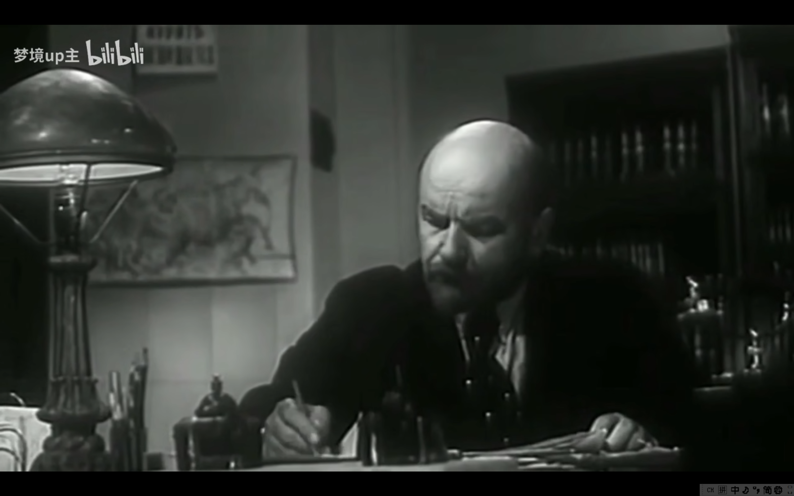
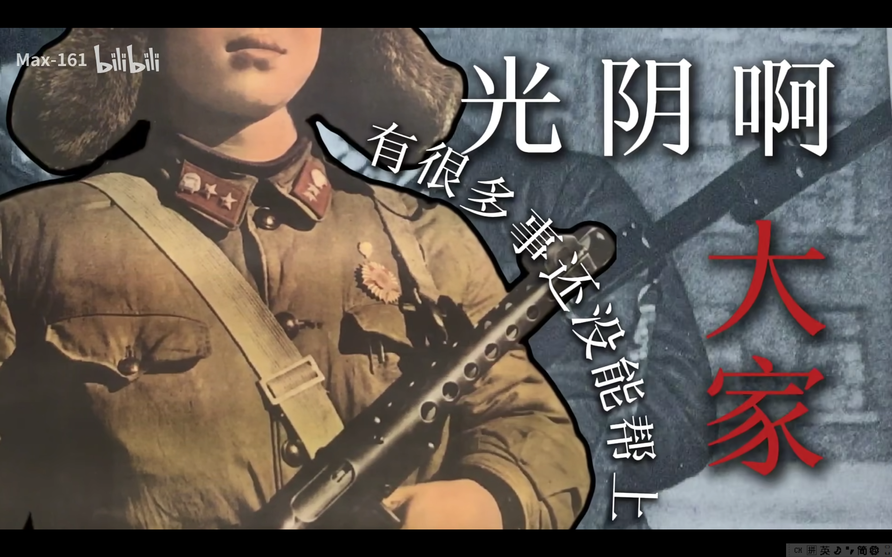
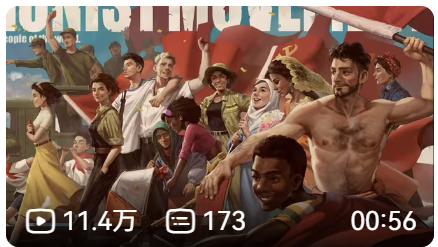
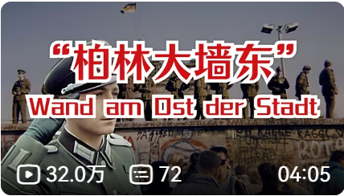
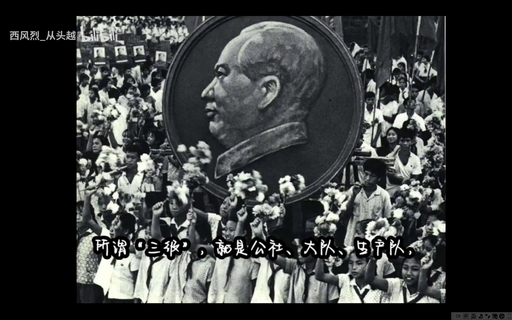

红色影像 · 革命记忆 · 理论学习
革命历史经典影像，永恒的艺术瑰宝
1965年为庆祝中华人民共和国成立16周年而创作，全面展现中国革命历程，是新中国文艺史上的里程碑之作
苏联经典革命历史影片，展现列宁风采和俄国十月革命的历史进程，是了解十月革命的重要影像资料
续集，讲述苏维埃政权建立初期的斗争，展现列宁在艰苦环境下的革命 leadership
包括辽沈战役淮海战役平津战役三部，全景式展现解放战争三大战役的恢宏场面

2小时氛围声，与导师一起学习吧，笔者倾情推荐适合学习工作时播放
精选当代优质UP主的红色视频内容
UP主：一颗冷凌檬

UP主：Max161
UP主：狨火

UP主：Atom_world
UP主：喵兔二象性

UP主：梨茗子
笔者精选，没有未圣章圣等人争议大的UP主
当代政治经济学分析
文革一手资料整理
建政梗百科与历史解读
比较还原的共和国简史
网络上为历史正名的优质视频，辅助佐证历史真相

破除对人民公社的探索失误以偏概全
乌克兰大饥荒到底怎么个事儿
——未完待续——